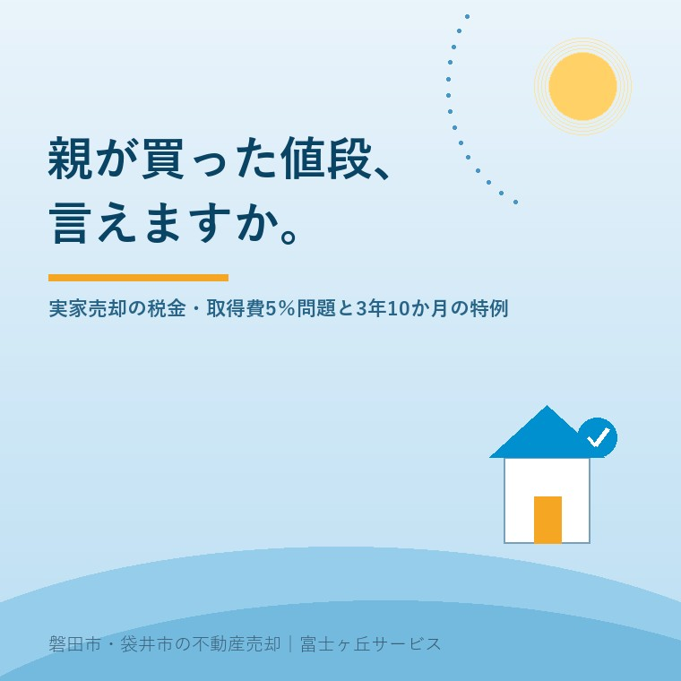

2026年7月25日｜カテゴリ：売却の税金・実家じまい

この記事の要点
Q. 相続した実家を売ったら、税金はどれくらいかかる？
A. 売却額から「親が買ったときの値段（取得費）」と売却経費を引いた利益に、約20％の税金がかかるのが基本です。ただし購入時の契約書が見つからないと、取得費は売却額の5％しか認められず、税金が一気に重くなります。売る前に契約書探しと、期限つきの特例（取得費加算・空き家3,000万円控除）の確認が欠かせません。磐田市・袋井市では、介護施設の運営から不動産事業を始めた富士ヶ丘サービスのような「介護×不動産」専門の会社に、書類の確認から相談するという選択肢があります。
実家の売却のご相談で、私たちが早い段階で必ずお聞きすることがあります。「この家を買ったときの契約書、残っていますか？」──実は、この1枚の紙があるかないかで、売った後の税金が数十万円から数百万円変わることがあるのです。相続登記の義務化をきっかけに、磐田市・袋井市でも相続した実家の売却が動き出しています。今日は、売る前に知っておきたい譲渡所得税の基本と、「親が買った値段が分からない」ときに起きる5％問題、そして期限つきの2つの特例を整理します。
不動産を売って利益（譲渡所得）が出ると、所得税・住民税がかかります。計算はシンプルです。
| 項目 | 内容 |
|---|---|
| 譲渡所得 | 売却額 −（取得費 ＋ 譲渡費用（仲介手数料・測量費・解体費など）） |
| 税率（長期譲渡） | 所有期間5年超なら約20％（所得税・復興特別所得税15.315％＋住民税5％） |
| 相続した家の場合 | 親の取得時期と取得費をそのまま引き継ぐ（親が30年前に買った家なら長期譲渡） |
ポイントは「取得費」です。親が買ったときの代金や購入時の諸費用（建物は経過年数分の減価償却を差し引き）を取得費にできれば、利益は小さくなり、税金も小さくなります。
ところが、取得費を証明する書類が何もないと、税務上は売却額の5％を取得費とみなす「概算取得費」で計算することになります（国税庁タックスアンサーNo.3258）。数字で比べてみましょう。実家が1,500万円で売れたケースです（譲渡費用100万円と仮定）。
| 契約書あり（取得費1,200万円） | 契約書なし（概算取得費5％＝75万円） | |
|---|---|---|
| 譲渡所得 | 1,500万 −1,200万 −100万 ＝ 200万円 | 1,500万 −75万 −100万 ＝ 1,325万円 |
| 税額（約20.315％） | 約41万円 | 約269万円 |
同じ家を同じ値段で売っても、書類の有無で税金が200万円以上変わる──これが「5％問題」です。昭和40〜50年代に建てられた磐田・袋井の実家では、購入時の書類が見つからないことはめずらしくありません。だからこそ、売却活動を始める前の「書類探し」が実は一番の節税になります。
探す場所は、実家の仏間の引き出し・金庫・タンスの奥。売買契約書そのものが無くても、住宅ローンの金銭消費貸借契約書、登記簿の乙区に残る抵当権の設定金額、購入時のパンフレットや分譲価格表、振込の記録などが取得費を裏付ける材料になることがあります（認められるかは個別判断のため税理士へ）。実家の書類の探し方は書類と名義の記事でも解説しています。遺品整理で古い書類をまとめて処分してしまう前に、必ず確認してください。
相続税を納めた方には、「取得費加算の特例」（国税庁No.3267）があります。相続でもらった不動産を、相続開始の翌日から相続税の申告期限の翌日以後3年を経過する日まで（亡くなってからおおむね3年10か月以内）に売ると、納めた相続税のうちその不動産に対応する分を取得費に上乗せでき、譲渡所得を圧縮できます。
逆に言えば、この特例には明確な期限があります。「気持ちの整理がついてから」と実家を持ち続けているうちに3年10か月を過ぎ、使えるはずの特例を逃すケースは実務でもよく見かけます。相続税を納めた方は、売却スケジュールをこの期限から逆算するのがおすすめです。
親がひとり暮らしだった家を相続して売る場合、要件を満たせば譲渡所得から最高3,000万円を控除できる「空き家特例」（国税庁No.3306）があります。1981年5月31日以前に建築された家屋が対象で、耐震改修または取り壊して売ることなどが要件です（2024年からは買主が翌年2月15日までに耐震改修・取壊しをする場合も対象）。この特例の適用期限は2027年（令和9年）12月31日までの売却です。
注意したいのは、取得費加算の特例と空き家特例は同じ不動産で併用できず、どちらかを選ぶことです。相続税の額、家の状態、売却額によって有利な方が変わるため、ここは税理士と一緒に試算する場面です。私たち不動産会社の役割は、その試算の前提になる「売れる見込み額」と「要件に合う売り方（解体か、耐震か、いつまでに引き渡すか）」を整えることだと考えています。
磐田市・袋井市では、相続登記の義務化（過去の相続分は原則2027年3月31日まで）をきっかけに、長く止まっていた実家の名義整理と売却が動き出しています。ただ、この地域の実家は敷地が広く、解体費や測量費もそれなりにかかるため、「売れた金額」より「税金と費用を引いて手元に残る金額」で考えないと、判断を誤ります。取得費の書類があるか、3年10か月の期限はいつか、空き家特例の要件に合う売り方ができるか──この3点を最初に確認するだけで、手残りは大きく変わります。
当社のふじがおか実家カルテでは、登記情報から取得時期や抵当権の記録を確認し、売却前に「税金の相談を税理士にすべき状態か」を整理します。介護施設の運営から始まった会社なので、施設入居のタイミングと売却時期・特例の期限をあわせて考えられるのが強みです。
富士ヶ丘サービスは、磐田市・袋井市に特化した地域密着の会社として、「高く売る」だけでなく「税金と費用を引いた後、家族の手元にきちんと残る売却」を大切にしています。個別の税額の計算・特例の適用可否は税理士・税務署への確認が必要ですが、その入口の整理は当社がお手伝いします。実家じまい相談室・相続はじめ相談室もあわせてご利用ください。
ふじがおか実家カルテ｜売る前の「税金の入口整理」に
取得時期・抵当権の記録・特例の期限。売る前に、まず1冊に。
登記情報と固定資産税通知書から、取得時期や名義・農地・道路など売却の前提条件を宅建士が机上で確認します。税理士への相談が必要なポイントも整理してお渡しします。
本記事は2026年7月25日時点の情報をもとに作成しています。記事中の税額は税率20.315％で計算した概算のイメージであり、実際の税額・各特例（概算取得費・取得費加算・空き家3,000万円控除）の適用可否は、必ず税理士・税務署にご確認ください。

この記事を書いた人：大石浩之（宅地建物取引士）
磐田市・袋井市で「介護×相続×空き家」に特化した不動産売却支援を行う富士ヶ丘サービスの代表取締役・宅地建物取引士。介護施設の運営から不動産事業を始めた経験をもとに、売主とご家族が困らない売却を一件ずつお手伝いしています。プロフィール
磐田市・袋井市の実家じまい・相続空き家相談
固定資産税通知書だけでも相談できます
住所があいまいでも、通知書や写真から名義・道路・農地・残置物の確認順を整理します。カルテ申込またはLINEで状況を送ってください。
富士ヶ丘サービス株式会社／静岡県磐田市見付5789番地1／TEL:0538-31-3308／静岡県知事 (2) 第14083号／代表取締役・宅地建物取引士 大石 浩之